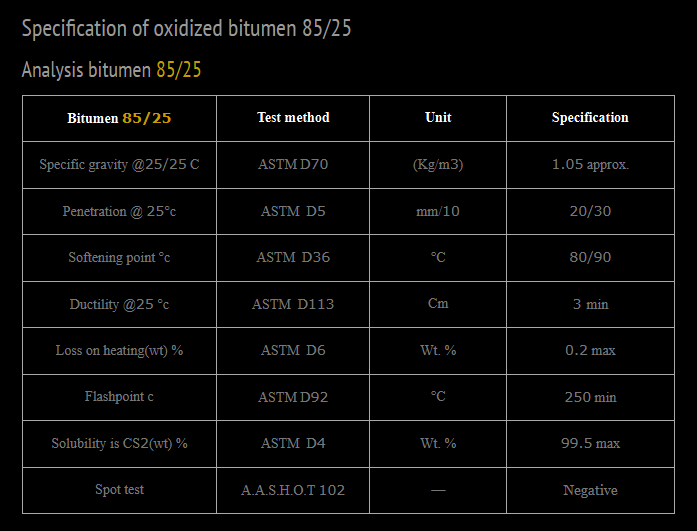

Description of Oxidized Bitumen 85/25 – Iran Bitumen Supply Int │ IBSI
Oxidized Bitumen 85/25 is a high‑quality, semi‑solid industrial bitumen produced through the controlled oxidation of petroleum bitumen. In the production reactor, a blend of Vacuum Bottom (VB) and Vacuum Slops (VS) is exposed to hot air under specific pressure and temperatures ranging from 200–300°C. During this process, hydrogen atoms in the bitumen molecules react with oxygen, creating a polymerized structure with lower penetration and higher softening point than the original bitumen. The resulting product—Bitumen 85/25—has a softening point of 85°C and a penetration value of 25 dmm, making it a durable, stable, and highly reliable oxidized bitumen suitable for a wide range of industrial and construction applications. At Iran Bitumen Supply Int │ IBSI, our Oxidized Bitumen 85/25 is produced by blowing hot air through Bitumen 60/70, resulting in a product with superior adhesion, waterproofing capability, and long‑term performance. It remains predominantly solid at ambient temperatures and offers excellent resistance to heat, aging, and deformation.
Uses of Oxidized Bitumen 85/25
Oxidized Bitumen 85/25 supplied by Iran Bitumen Supply Int │ IBSI is widely used across multiple industries, including:
Construction & Civil Engineering
- ✔ Road construction and pavement applications
- ✔ Crack sealing and asphalt repair
- ✔ Waterproofing and insulation
- ✔ Roofing membranes and bitumen sheets
- ✔ Joint sealing and civil engineering works
Industrial Applications
- ✔ Paints, varnishes, lacquers, and coatings
- ✔ Adhesives and sealants
- ✔ Electrical laminates
- ✔ Corrosion‑resistant coatings for metal surfaces
- ✔ Pipe coating and hydraulic applications
- ✔ Dust‑binding agents
- ✔ Rubber and plastic modification
- ✔ Paper, pulp, and board manufacturing
- ✔ Textile processing
Automotive & Specialty Uses
- ✔ Car undercoating materials
- ✔ Noise‑proofing and dust‑proofing compounds
- ✔ Synthetic turf base materials
- ✔ Damp‑proofing and mastic production
Oxidized Bitumen 85/25 is especially valued for its waterproofing, adhesive strength, and corrosion resistance, making it a preferred choice in industrial and construction sectors.
Application Guidelines for Oxidized Bitumen 85/25
To achieve proper flow and viscosity, Bitumen 85/25 must be heated to approximately twice its softening point. Before application: Surfaces must be clean, dry, and free of dust, loose particles, curing compounds, and irregularities. Proper heating ensures optimal adhesion and performance. Failure to prepare the surface correctly may reduce bonding strength and durability.
Packaging Options for Oxidized Bitumen 85/25
At Iran Bitumen Supply Int │ IBSI, Oxidized Bitumen 85/25 is available in multiple packaging formats: Kraft paper bags, Meltable plastic bags, Steel drums, Bulk blown asphalt. All packaging options are designed for safe handling, efficient transportation, and easy melting at the job site.
Quality & Safety Guarantee – Oxidized Bitumen 85/25
Iran Bitumen Supply Int │ IBSI guarantees the quality of Oxidized Bitumen 85/25 through strict quality control procedures. We work with independent international inspection companies to verify the quality and quantity of each shipment during loading. Our QC team conducts batch‑wise testing before dispatch to ensure full compliance with ASTM standards. This ensures that every shipment meets the performance requirements demanded by industrial, construction, and waterproofing applications.

Specification of Oxidized Bitumen 85/25